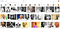

The Gandhi neuron


This neuron doesn't make the difference between you and me. This neuron that fire like you were touched when in fact it is someone else who is touched. this kind of neuron drives empathy and I hope you already know the role that empathy plays in marketing and product design if you don't you can read this and follow the author because he talks a lot about how empathy is a critical marketing artifact. Empathy creates and strengthens tribe links. it makes us believe in a brand or buy a particular kind of product. This neuron is what Vilayanur Ramachandran called the Gandhi neuron. Understanding how our brain works not only helps us sell more products it does better. it can heal our pains